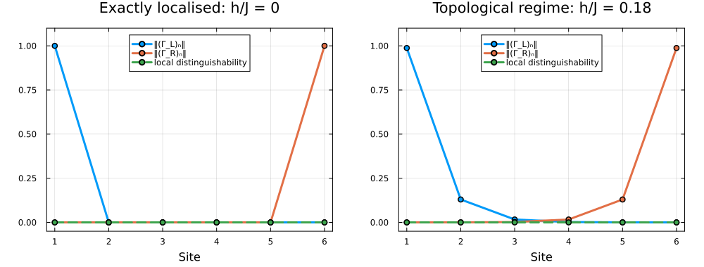

Boundary modes of the Z_p parafermion chain
In this example we study the Zp parafermion chain (Fendley's chain), the parafermionic generalisation of the Kitaev chain. We construct the Hamiltonian symbolically, restrict to the Zp charge sectors, solve for the p ground states and characterise the locality of the many-body parafermion edge modes.
As in the Kitaev tutorial, the edge modes are built only from the ground states (there γ = o*e' + hc). For p > 2 the relative phases of the p ground states matter; they are fixed by the locality criterion explained below.
using FermionicHilbertSpaces
import FermionicHilbertSpaces as FHS
import FermionicHilbertSpaces: indices, sector, quantumnumbers
using LinearAlgebra, Plots
trace_norm(A) = sum(svdvals(Matrix(A)))trace_norm (generic function with 1 method)Parafermions and the on-site clock algebra
p = 3
N = 6
J = 1.0
ω = cis(2π / p)
@parafermions p c
Hfull = hilbert_space(c, 1:N)
H = constrain_space(Hfull, FHS.SectorConstraint(FHS.parafermion_charge))
Hmodes = [hilbert_space(c, j:j) for j in 1:N]6-element Vector{FermionicHilbertSpaces.ParafermionicSpace{FermionicHilbertSpaces.ParaFockNumber{3, 1, UInt64}, FermionicHilbertSpaces.ParafermionSym{Int64, FermionicHilbertSpaces.SymbolicParafermionBasis{FermionicHilbertSpaces.ParafermionicGroup{3, 1, FermionicHilbertSpaces.Tags{Tuple{Symbol}}}}}, FermionicHilbertSpaces.ParafermionicGroup{3, 1, FermionicHilbertSpaces.Tags{Tuple{Symbol}}}, Tuple{FermionicHilbertSpaces.SymbolicParafermionBasis{FermionicHilbertSpaces.ParafermionicGroup{3, 1, FermionicHilbertSpaces.Tags{Tuple{Symbol}}}}, Int64}}}:
ParafermionicSpace{3,1}(c[1])
ParafermionicSpace{3,1}(c[2])
ParafermionicSpace{3,1}(c[3])
ParafermionicSpace{3,1}(c[4])
ParafermionicSpace{3,1}(c[5])
ParafermionicSpace{3,1}(c[6])On every site the nilpotent parafermion cj generates the clock algebra Xj = cj† + cj^(p-1), X|n> = |n+1>, Zj = ω^(nj), Z X = ω X Z. Embedded in the chain, Xj carries the parafermionic string, so Xj is the first parafermion χ{2j-1} of site j. The second one is χ{2j} = Yj = Xj Zj^(-σ), where Xi Xj = ω^σ Xj X_i (i < j) is the braiding convention of the package.
X(j) = c[j]' + c[j]^(p - 1)
Z(j) = I + (ω - 1) * sum(ω^(k - 1) * (c[j]')^k * c[j]^k for k in 1:p-1)
X1, X2, Z1 = (representation(op, Hfull) for op in (X(1), X(2), Z(1)))
@assert norm(Z1 * X1 - ω * X1 * Z1) < 1e-10 # clock algebra
σ = norm(X1 * X2 - ω * X2 * X1) < norm(X1 * X2 - conj(ω) * X2 * X1) ? 1 : -1
@assert norm(X1 * X2 - ω^σ * X2 * X1) < 1e-10 # braiding
Y(j) = σ == 1 ? X(j) * Z(j)' : X(j) * Z(j)Y (generic function with 1 method)The bond unitary B = Yj† X{j+1} obeys B^p = e^{iη}·1. Removing that phase gives bond eigenvalues ω^k with a unique minimum of -(B + B†) at k = 0: the non-chiral ferromagnet, whose h = 0 point is exactly solvable (all bonds commute).
B = representation(Y(1)' * X(2), Hfull)
η = angle(tr(B^p) / dim(Hfull))
@assert norm(B^p - cis(η) * I) < 1e-10
ϕ = cis(-η / p)1.0 + 5.1399214103016507e-17imHamiltonian
H = -J Σj (ϕ χ{2j}† χ{2j+1} + hc) - h Σj (χ{2j-1}† χ{2j} + hc), the second sum being -h Σj (Zj + Zj†). At h = 0, χ1 = X1 and χ{2N} = Y_N commute with H exactly: perfectly localised edge modes.
parafermion_chain(J, h) = -J * sum(ϕ * Y(j)' * X(j + 1) + hc for j in 1:N-1) -
h * sum(X(j)' * Y(j) + hc for j in 1:N)parafermion_chain (generic function with 1 method)Model sanity check only; the edge operators are not used to build the modes.
let H0 = representation(parafermion_chain(J, 0.0), Hfull)
for edge in (X(1), Y(N))
op = representation(edge, Hfull)
@assert norm(H0 * op - op * H0) < 1e-10
end
endGround states, one per Z_p charge sector
States are labelled by their eigenvalue ω^q of Q = Πj Zj, so Xj, Yj raise q by one.
Qop = prod(representation(Z(j), H) for j in 1:N)
function ground_states(hsym)
states = map(quantumnumbers(H)) do qn
Hsec = sector(qn, H)
vals, vecs = eigen(Hermitian(Matrix(representation(hsym, Hsec))))
ψ = zeros(ComplexF64, dim(H))
ψ[indices(Hsec, H)] = vecs[:, 1]
q = mod(round(Int, angle(dot(ψ, Qop, ψ)) / (2π / p)), p)
(; q, energy=vals[1], gap=vals[2] - vals[1], ψ)
end
sort!(states; by=s -> s.q)
@assert [s.q for s in states] == 0:p-1
return states
endground_states (generic function with 1 method)Edge modes from the ground states
A charge-raising operator acting inside the ground space is Γ = Σq cq |q+1><q| (q mod p), the p = 2 case with c = (1, 1) being the Majorana oe' + hc. Rephasing the states, |q> → e^{iθq}|q>, maps cq → cq e^{i(θ{q+1} - θq)}: the moduli |cq| and the holonomy Πq cq are the only gauge invariants, so choosing c *is fixing the relative phases of the ground states.
We choose c by locality. Reductions are linear, Rj(Γ) = Σq cq Rj(|q+1><q|), so the operator weight of Γ on site j is a Hermitian form, ‖Rj(Γ)‖F² = c† Mj c, (Mj){qq'} = Tr[Rj(|q+1><q|)† Rj(|q'+1><q'|)]. The most localised left / right mode is the top eigenvector of M1 / MN. Normalisation ‖c‖ = √p makes a unitary mode have |cq| = 1; the overall phase is fixed by Πq cq > 0 (Γ^p is then a positive multiple of the ground-space projector).
function edge_modes(states)
G = hcat((s.ψ for s in states)...) # columns |0>, …, |p-1>
T = [G[:, mod(q + 1, p) + 1] * G[:, q + 1]' for q in 0:p-1] # |q+1><q|
R = [[partial_trace(Tq, H => Hmode) for Tq in T] for Hmode in Hmodes] # R_j(|q+1><q|)
reduction(c, j) = sum(c[q+1] * R[j][q+1] for q in 0:p-1) # R_j(Γ)
function most_localized(j)
M = Hermitian([tr(R[j][a]' * R[j][b]) for a in 1:p, b in 1:p])
c = eigen(M).vectors[:, end]
return sqrt(p) * cis(-angle(prod(c)) / p) * c
end
return (; G, cL=most_localized(1), cR=most_localized(N), reduction)
endedge_modes (generic function with 1 method)Fixing the relative phases of the ground states
With Πq cq > 0 the recursion θ{q+1} = θq - arg cq closes around the Zp cycle and makes every cq real and positive. In this gauge ΓL = Σq |cq| |q+1><q| is a plain clock shift, |q+1> ∝ ΓL |q>, the analogue of |o> = γL |e>.
function fix_phases(G, c)
θ = zeros(p)
for q in 1:p-1
θ[q+1] = θ[q] - angle(c[q])
end
u = cis.(θ)
regauge(d) = [d[q+1] * u[mod(q + 1, p) + 1] * conj(u[q+1]) for q in 0:p-1]
return G * Diagonal(u), regauge
end
function analyze(h)
states = ground_states(parafermion_chain(J, h))
(; G, cL, cR, reduction) = edge_modes(states)
Gfixed, regauge = fix_phases(G, cL)
cLf, cRf = regauge(cL), regauge(cR)
@assert all(x -> abs(imag(x)) < 1e-10 && real(x) > 0, cLf)
#Locality profiles, normalised so a perfectly localised unitary mode gives 1.
ΓL = [trace_norm(reduction(cL, j)) / p for j in 1:N]
ΓR = [trace_norm(reduction(cR, j)) / p for j in 1:N]
#Local distinguishability of the ground states, max_{q<r} ½‖ρ_q^(j) - ρ_r^(j)‖₁.
ρ = [[partial_trace(G[:, q], H => Hmode) for q in 1:p] for Hmode in Hmodes]
LD = [maximum(trace_norm(ρ[j][q] - ρ[j][r]) / 2 for q in 1:p for r in q+1:p) for j in 1:N]
#Ground-space parafermion algebra: Γ_L Γ_R = ω^σ Γ_R Γ_L ⇔ all ratios below equal ω^σ.
braiding = [cL[mod(q + 1, p) + 1] * cR[q+1] / (cR[mod(q + 1, p) + 1] * cL[q+1]) for q in 0:p-1]
energies = [s.energy for s in states]
println("\nh/J = ", h / J)
println(" energies: ", energies)
println(" ground-band splitting: ", maximum(energies) - minimum(energies))
println(" smallest gap in a sector: ", minimum(s.gap for s in states))
println(" |c_L| = ", round.(abs.(cL); digits=4), " |c_R| = ", round.(abs.(cR); digits=4))
println(" c_R in the gauge where c_L > 0: ", round.(cRf; digits=4))
println(" braiding ratios: ", round.(braiding; digits=4), " (ω^σ = ", round(ω^σ; digits=4), ")")
return (; h, states, Gfixed, cL=cLf, cR=cRf, ΓL, ΓR, LD, braiding)
endanalyze (generic function with 1 method)Run at the exactly solvable point and in the topological regime
sweet = analyze(0.0);
topological = analyze(0.18J);
h/J = 0.0
energies: [-10.0, -10.000000000000007, -10.000000000000002]
ground-band splitting: 7.105427357601002e-15
smallest gap in a sector: 2.9999999999999734
|c_L| = [1.0, 1.0, 1.0] |c_R| = [1.0, 1.0, 1.0]
c_R in the gauge where c_L > 0: ComplexF64[1.0 - 0.0im, -0.5 + 0.866im, -0.5 - 0.866im]
braiding ratios: ComplexF64[-0.5 - 0.866im, -0.5 - 0.866im, -0.5 - 0.866im] (ω^σ = -0.5 - 0.866im)
h/J = 0.18
energies: [-10.090498782966225, -10.090479452378496, -10.090479452378489]
ground-band splitting: 1.933058773673224e-5
smallest gap in a sector: 2.6163515546569496
|c_L| = [1.0, 1.0, 1.0] |c_R| = [1.0, 1.0, 1.0]
c_R in the gauge where c_L > 0: ComplexF64[1.0 - 0.0im, -0.5 + 0.866im, -0.5 - 0.866im]
braiding ratios: ComplexF64[-0.5 - 0.866im, -0.5 - 0.866im, -0.5 - 0.866im] (ω^σ = -0.5 - 0.866im)At h = 0 the left mode lives on site 1 only, the right mode on site N only, the ground states are locally indistinguishable, and ΓL, ΓR braid like χ1, χ{2N}.
tol = 1e-8
@assert abs(sweet.ΓL[1] - 1) < tol && maximum(sweet.ΓL[2:end]) < tol
@assert abs(sweet.ΓR[end] - 1) < tol && maximum(sweet.ΓR[1:end-1]) < tol
@assert maximum(sweet.LD) < tol
@assert maximum(abs.(sweet.braiding .- ω^σ)) < 1e-6Plot
function locality_panel(result; title)
lw, marker, markerstrokewidth = 3, true, 2
fig = plot(; xlabel="Site", title, frame=:box, xticks=1:N, ylims=(-0.05, 1.1), legend=:top)
plot!(fig, 1:N, result.ΓL; label="‖(Γ_L)ₙ‖", lw, marker, markerstrokewidth)
plot!(fig, 1:N, result.ΓR; label="‖(Γ_R)ₙ‖", lw, marker, markerstrokewidth)
plot!(fig, 1:N, result.LD; label="local distinguishability", lw, marker, markerstrokewidth, linestyle=:dash)
return fig
end
plot(locality_panel(sweet; title="Exactly localised: h/J = 0"),
locality_panel(topological; title="Topological regime: h/J = 0.18");
layout=(1, 2), size=(1000, 380), margin=5Plots.mm)
This page was generated using Literate.jl.